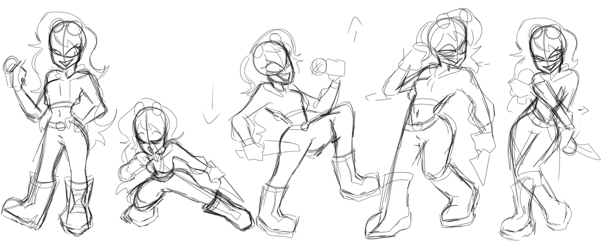
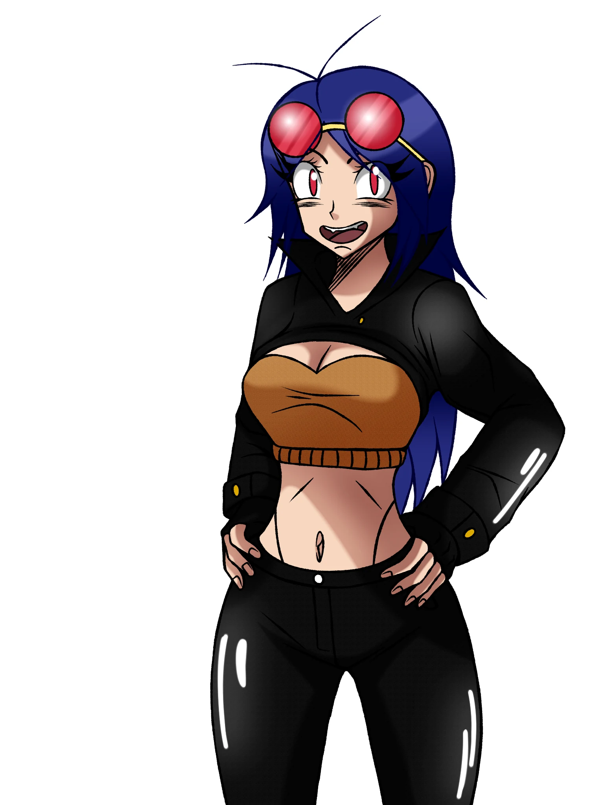
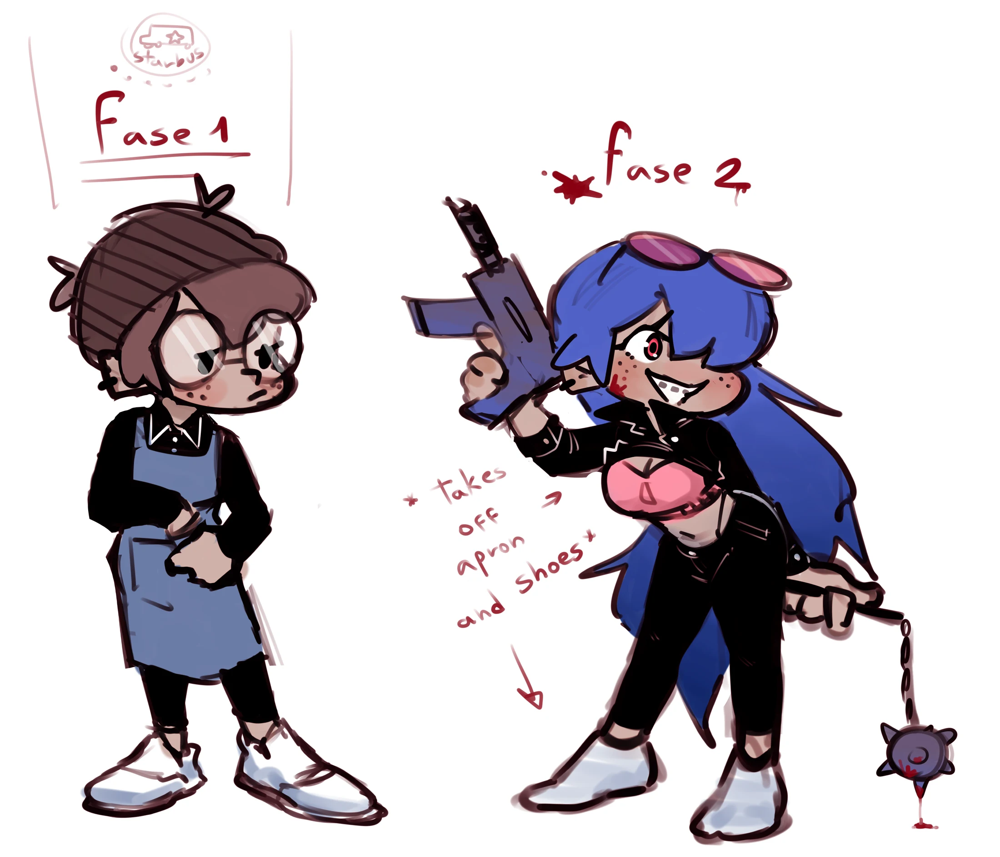
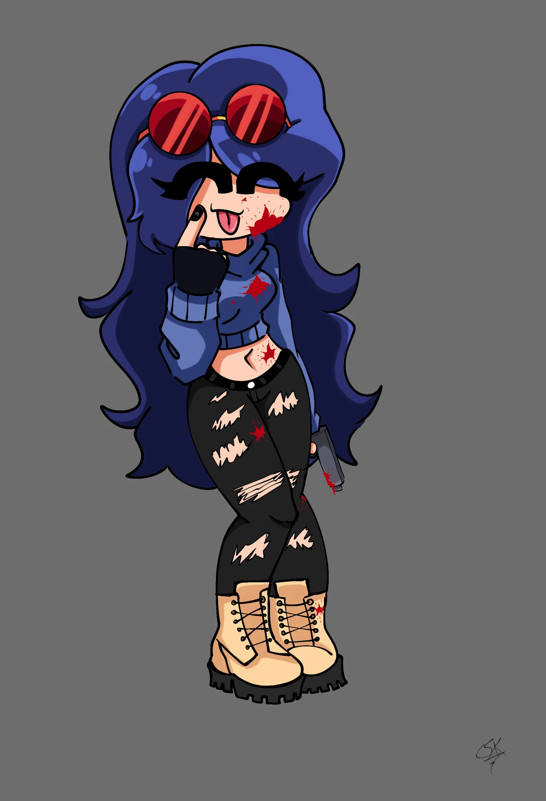
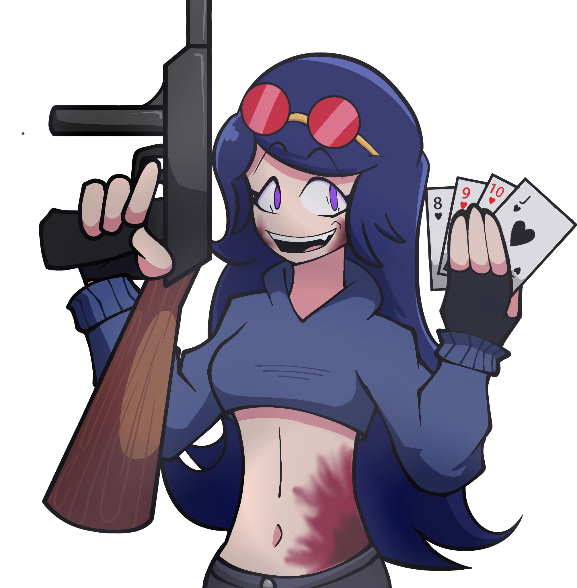
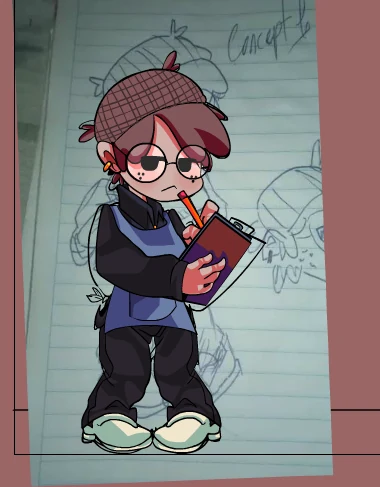

01 // SCRAPPED
Arsenal
Duración: 1:14
Material histórico no canónico conservado exactamente como fue entregado: canciones, instrumentales, portadas, diseños antiguos y boceto de escenario.

Al iniciar una canción, cualquier otra pista abierta se pausa automáticamente.

Duración: 1:14
Duración: 1:04

Duración: 2:13

Duración: 3:26
Duración: 3:31

Duración: 2:00
Duración: 2:00

Duración: 1:05
Imágenes sin una canción equivalente directa dentro del ZIP.
Este material se conserva para documentar la evolución de Aurora y no reemplaza la versión oficial actual.